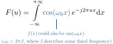

Tutorial 4: Sinusoidal Wave and the Dirac Delta
Considering a Sinusoidal Wave to Derive the Concept of the Dirac Delta Function.
In this tutorial we are going to approach the concept of the Dirac delta function step by step. To this end we consider \(f(x)\) to be a sinusoidal wave of the shape \(f(x) = \cos(\omega_0 x - x_0)\) where \(\omega_0 = 2\pi\beta\) and \(\beta\) is some fixed frequency. Keep in mind that any sine function may always be represented by a shifted cosine function and vice versa.
For now we consider \(f(x)\) to be a cosine function with no shift: \(f(x)=\cos(\omega_0 x)\). On the next pages we will continue by determining the Fourier transform for such a sinusoidal wave.
